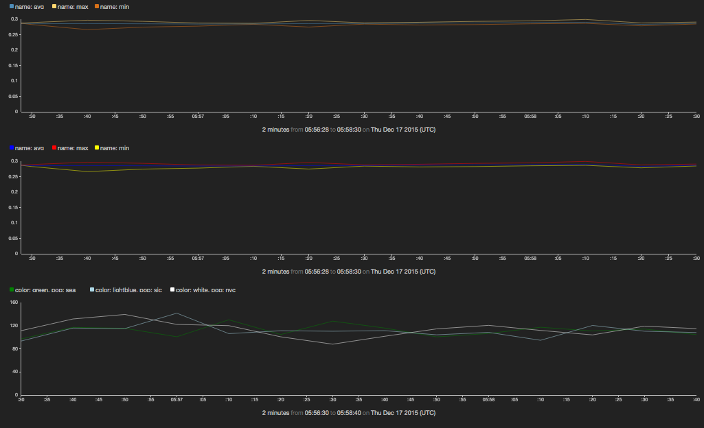

Multi-series time charts
A multi-series time chart displays multiple time series that share the same scales for both the horizontal (time) and vertical (value) axes.
For charts that display multiple time series, there are two different ways to structure data:
- By the values of different fields inside individual points
- By referring to a single field, distinguished by the value of another field
Both styles produce identical-looking charts. The style you choose depends on how data is naturally organized in your Juttle program.
The series on a multi-series chart are displayed in distinctive colors by default, but the colors may also be specified explicitly.
For a multi-series chart using field names, the -colors parameter gives a comma-separated list of colors (that must be the same length as the -columns list), using any valid CSS color.
For a chart using the -by parameter, the -colorField parameter specifies a field in which the color may be found. See timechart
for complete information about parameters.
Example: configuring colors for time series
sub src(cate, coefficient) {
emit -limit 100 -hz 10 |
put category = cate |
put value = Math.random() * coefficient
}
(
src -cate "smaug" -coefficient 10;
src -cate "sauron" -coefficient 20;
src -cate "saruman" -coefficient 1;
) |
view timechart -o {
keyField: 'category',
yScales: {
secondary: {}
},
series: [
{
label : 'smaug',
color : 'red',
name : 'smaug'
},
{
label : 'sauron',
color : '#228B22',
name : 'sauron'
},
{
label : 'saruman',
color : 'burlywood',
name : 'saruman',
yScale : 'secondary'
}
]
}

Example: another method for configuring colors for time series
// approach 1: split points to get separate series
// use default colors
read stochastic -source 'cdn' -from :-1m: -every :2s: -source_type 'metrics' name='cpu'
| reduce -every :10s: time = first(time), min = min(value), max = max(value), avg = avg(value)
| split min, avg, max
| view timechart;
// approach 2: split points to get separate series
// assign custom color to each series
read stochastic -source 'cdn' -from :-1m: -every :2s: -source_type 'metrics' name='cpu'
| reduce -every :10s: time = first(time), min = min(value), max = max(value), avg = avg(value)
| split min, avg, max
| view timechart -series [
{name: 'min', color: 'yellow'},
{name: 'avg', color: 'blue'},
{name: 'max', color: 'red'}
];
// approach 3: derive series from reducing by a field
// (unique values of that field define individual series)
// assign custom colors via function
function getcolor(pop) {
if (pop == 'sea') { return 'green'; }
if (pop == 'sjc') { return 'lightblue'; }
if (pop == 'nyc') { return 'white'; }
return 'red';
}
read stochastic -source 'cdn' -from :-1m: -every :2s: -nhosts 3 -source_type 'metrics' name='response_ms'
| reduce -every :10s: value=max(value) by pop
| put color = getcolor(pop)
| view timechart -series [
{name: 'sea', color: getcolor('sea')},
{name: 'sjc', color: getcolor('sjc')},
{name: 'nyc', color: getcolor('nyc')}
];
